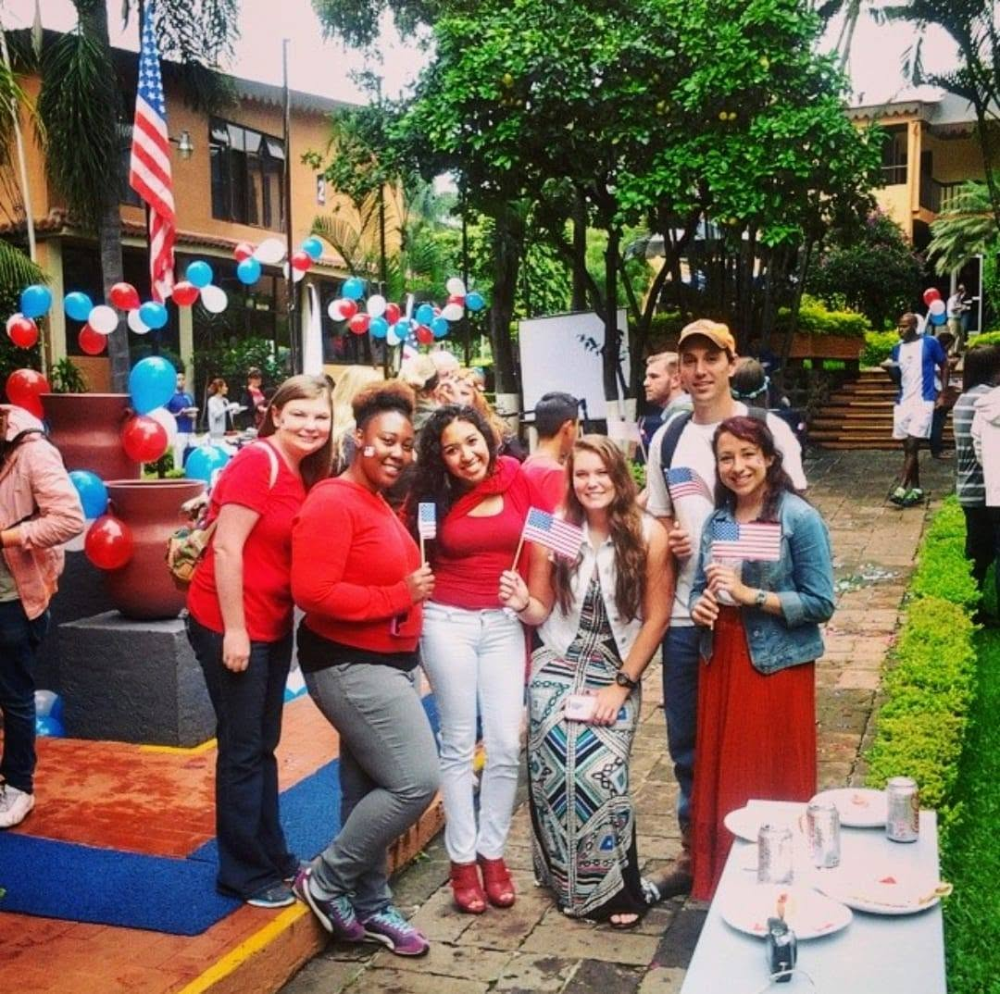
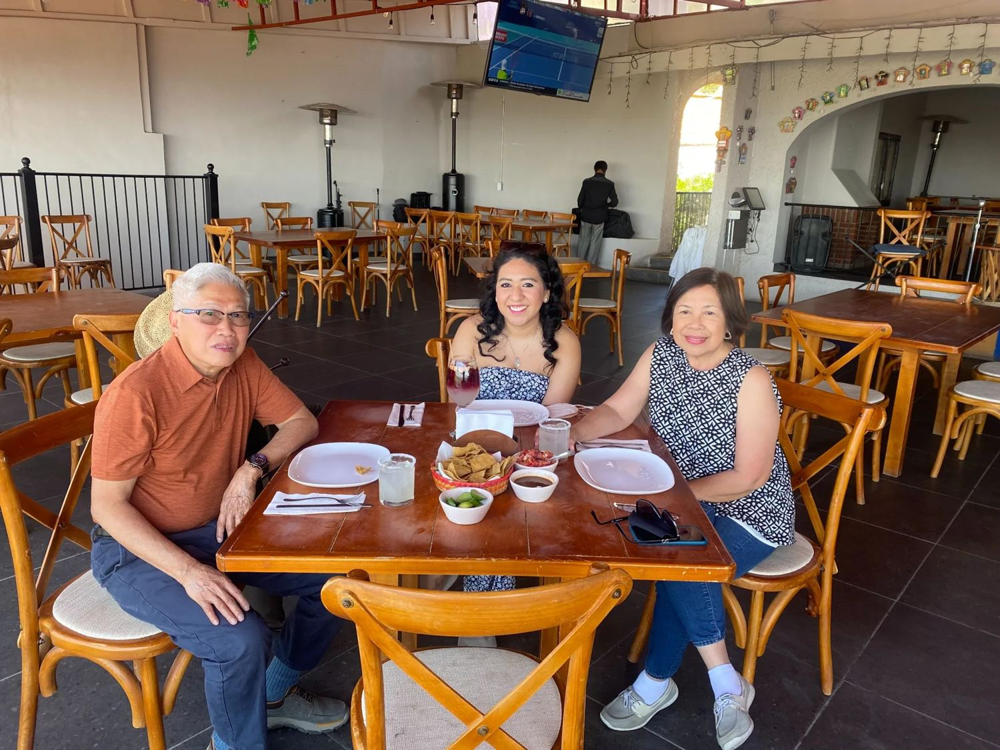

Conversation from day one
Talk about your life, plans, and interests with activities tailored to your level.
Online Spanish lessons with a qualified native Mexican teacher. Real conversation, personalized learning, and culture brought to life.
At Spanish con Nativos, grammar serves a purpose: helping you communicate. We practice real situations, pronunciation, comprehension, and conversation with one-to-one guidance.
Talk about your life, plans, and interests with activities tailored to your level.
Private lessons, personalized materials, and actionable feedback.
Mexican expressions, pronunciation, and culture to understand the language in context.
From your first words to nuanced conversations, each level has a clear purpose.
Build everyday communication foundations.
Develop fluency, independence, and natural conversation.
Refine precision, nuance, and advanced expression.

I’m Aly Téllez, a Mexican Spanish teacher with over 16 years of experience. My academic background includes a degree in Spanish Language Teaching, specialization in teaching Spanish as a foreign language, and graduate studies in Education.
My goal is to help you speak with confidence, clarity, and ease in every lesson.
Explore feedback shared by people who have studied with Spanish con Nativos.


Explore Mexican culture and practice Spanish in real-life situations through our cultural immersion experiences.
Discover immersion →

Explore classes, milestones, and experiences shared with our students.
Explore photos →Tell us your level and goals. We’ll help you explore lessons, packages, and available times.